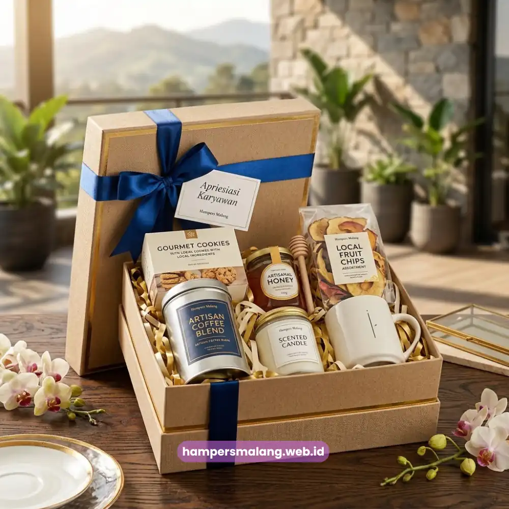
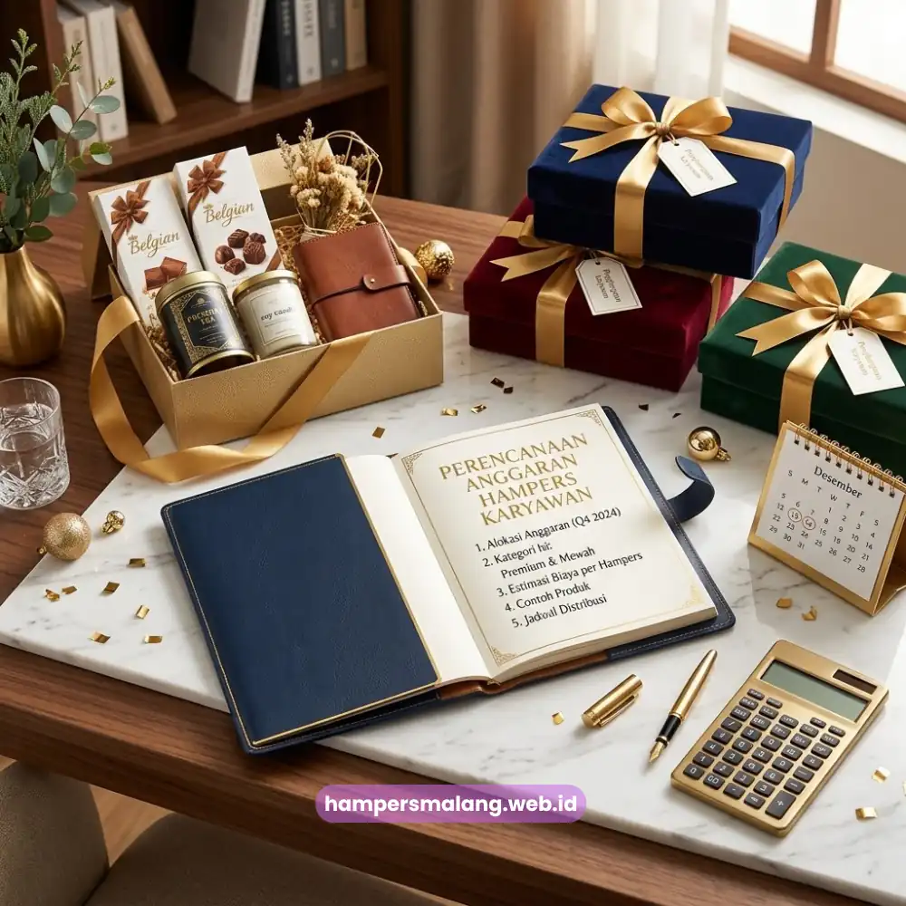

Anggaran hampers karyawan yang efisien disusun dengan mempertimbangkan jumlah karyawan, isi produk, dan momen pemberian secara menyeluruh sejak awal perencanaan.
Anggaran yang direncanakan matang membantu perusahaan menghindari pembengkakan biaya di menit akhir.
Perencanaan yang baik juga memastikan kualitas hampers tetap terjaga meski dengan anggaran yang terbatas.
Menyusun anggaran hampers karyawan bukan sekadar menghitung nominal per unit, melainkan juga mempertimbangkan nilai yang ingin disampaikan perusahaan kepada karyawannya.
Artikel ini membahas cara menyusun anggaran hampers karyawan secara efisien tanpa mengorbankan kesan apresiasi yang ingin dicapai.
- Anggaran hampers karyawan idealnya dihitung berdasarkan jumlah karyawan, momen, dan target kualitas.
- Faktor isi produk dan kemasan turut memengaruhi besar anggaran yang dibutuhkan.
- Efisiensi anggaran dapat dicapai tanpa mengurangi kesan hampers secara signifikan.
- Perencanaan anggaran yang matang membantu menghindari pembengkakan biaya mendadak.
- Hampers Malang menyediakan paket hampers karyawan yang dapat disesuaikan dengan berbagai kisaran anggaran perusahaan.
Bagaimana Cara Menghitung Anggaran Hampers Karyawan?
Cara menghitung anggaran hampers karyawan dimulai dengan menentukan total jumlah penerima, kemudian dikalikan dengan estimasi biaya per unit sesuai kategori isi yang diinginkan.
Perhitungan ini menjadi dasar sebelum menentukan komposisi produk secara lebih rinci.
Setelah mendapatkan estimasi total, perusahaan perlu mengalokasikan sebagian anggaran untuk kemasan dan biaya distribusi, karena kedua komponen ini turut memengaruhi kesan keseluruhan hampers saat diterima karyawan.
Mengabaikan komponen ini dapat membuat estimasi awal meleset dari kondisi sebenarnya.
Perencanaan anggaran sebaiknya dilakukan jauh sebelum momen pemberian tiba, sehingga perusahaan memiliki waktu yang cukup untuk menyesuaikan komposisi produk apabila terjadi perubahan kondisi anggaran di tengah proses.
Apa Saja Faktor yang Memengaruhi Besar Anggaran Hampers?
Faktor utama yang memengaruhi besar anggaran hampers karyawan meliputi jumlah karyawan penerima, kategori isi produk, kualitas kemasan, dan momen pemberian.
Keempat faktor ini saling berkaitan dan menentukan nominal akhir yang dibutuhkan perusahaan.
Jumlah karyawan menjadi faktor paling mendasar karena memengaruhi skala produksi secara langsung.
Semakin banyak penerima, semakin besar pula peluang efisiensi biaya per unit apabila dipesan secara terpusat.
Kategori isi produk turut menentukan besar anggaran, karena setiap kategori memiliki kisaran harga yang berbeda tergantung jenis dan kualitas produk yang dipilih.
Kualitas kemasan dan momen pemberian juga memengaruhi anggaran secara tidak langsung.
Momen formal biasanya membutuhkan kemasan yang lebih premium dibandingkan momen internal yang lebih santai, sehingga anggaran perlu disesuaikan dengan konteks tersebut.

Bagaimana Menyeimbangkan Anggaran dan Kesan Hampers?
Menyeimbangkan anggaran dan kesan hampers dapat dilakukan dengan memprioritaskan produk yang memiliki nilai fungsional tinggi dibandingkan produk yang hanya bersifat pelengkap tanpa manfaat jelas.
Pendekatan ini memungkinkan perusahaan tetap memberikan kesan berkualitas meski dengan anggaran terbatas.
Selain memilih produk yang tepat, penyusunan kemasan yang rapi dan konsisten juga dapat memperkuat kesan hampers tanpa harus menambah anggaran secara signifikan.
Detail kecil seperti kartu ucapan atau tata letak produk yang rapi sering kali memberikan dampak visual yang lebih besar dibandingkan menambah jumlah item.
Perusahaan juga dapat mempertimbangkan skala pemesanan untuk mendapatkan efisiensi biaya, tanpa mengurangi standar kualitas yang telah ditetapkan sejak awal perencanaan.
Baca Juga: Menghitung Anggaran Hampers Apresiasi Karyawan yang Efektif
Strategi Mengoptimalkan Anggaran Hampers Tahunan
Strategi mengoptimalkan anggaran hampers tahunan dapat dilakukan dengan merencanakan kebutuhan hampers untuk seluruh momen dalam satu tahun sekaligus, bukan menyusunnya secara terpisah setiap kali momen tiba.
Perencanaan Anggaran Tahunan Terpadu
Dengan merancang anggaran secara tahunan, perusahaan dapat memetakan momen mana yang membutuhkan anggaran lebih besar dan momen mana yang dapat disusun lebih sederhana, sehingga alokasi dana menjadi lebih proporsional sepanjang tahun.
Evaluasi Berkala terhadap Efektivitas Anggaran
Evaluasi terhadap penggunaan anggaran hampers pada momen sebelumnya dapat menjadi acuan untuk menyempurnakan perencanaan pada momen berikutnya, termasuk dalam hal pemilihan kategori produk dan skala pemesanan.
Kesalahan Umum dalam Menyusun Anggaran Hampers
Kesalahan umum yang sering terjadi adalah menentukan anggaran tanpa mempertimbangkan seluruh komponen biaya, seperti kemasan dan distribusi, sehingga anggaran awal meleset dari kebutuhan sebenarnya.
Kesalahan lain adalah menyusun anggaran secara mendadak menjelang momen pemberian, yang berisiko membatasi pilihan produk dan mengurangi fleksibilitas dalam menyesuaikan kualitas hampers.
Perencanaan yang dilakukan lebih awal memberikan ruang yang lebih besar untuk menyesuaikan komposisi hampers sesuai anggaran yang tersedia.
Selain itu, sebagian perusahaan cenderung menyamaratakan anggaran untuk semua momen tanpa mempertimbangkan karakter masing-masing momen, padahal setiap momen dapat memiliki kebutuhan dan skala prioritas yang berbeda.
Menyusun anggaran hampers karyawan yang efisien membutuhkan perencanaan yang matang terhadap seluruh komponen biaya, mulai dari jumlah penerima hingga kemasan dan momen pemberian.
Anggaran yang terencana baik memungkinkan perusahaan tetap memberikan kesan apresiasi yang berkualitas tanpa harus melebihi kapasitas keuangan.
Tanya Jawab (FAQ)
Anggaran realistis dapat ditentukan dengan menghitung jumlah karyawan, kategori isi produk, serta biaya kemasan dan distribusi secara menyeluruh sejak awal perencanaan.
Bisa, dengan memprioritaskan produk yang bermanfaat serta menyusun kemasan secara rapi sehingga kesan hampers tetap terjaga meski anggaran terbatas.
Sebaiknya iya, karena perencanaan tahunan membantu perusahaan mengalokasikan anggaran secara proporsional untuk setiap momen sepanjang tahun.

Butuh Hampers Perusahaan?
Konsultasikan kebutuhan apresiasi karyawan Anda sekarang.
Ditulis oleh Tim Maroon Souvenir
Sahabat mahasiswa dan pelaku bisnis di Malang Raya. Berpengalaman menangani merchandise event kampus, instansi pemerintahan, dan hotel berbintang di Batu.